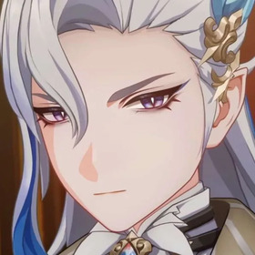
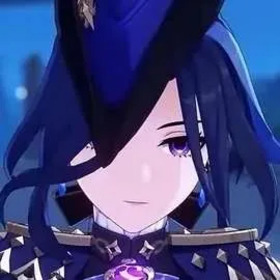
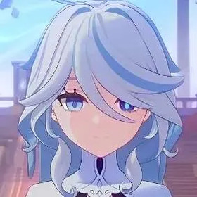

Furina de Fontaine with Chevalmarin
About Furina
Furina de Fontaine, formerly known as hydro archon of the region of Teyvat called
Fontaine,
is a playable character in the game
Genshin Impact.
Furina was a highly renowned and successful actress, however, in need of a change of pace and a way to distance herself from certain events
in her past, Furina has endeavored to work as a film director.
Furina has a flair for the dramatics but can be incredibly genuine and kind. Her determination to endure mental anguish for the sake of her people is awe-inspiring, and her sense of self-control is admirable.
Furina uses a hydro vision, which allows her to use the power of water to heal her allies and battle her enemies.
her weapon of choice is a sword, however she relies on her companions, the Salon Solitaire, for her strength.
The
Salon Solitaire
Surintendante Chevalmarin
Mademoiselle Crabaletta
Gentilhomme Usher
People Furina knows
-

- Neuvillette
- Chlorinde
- Focalors

